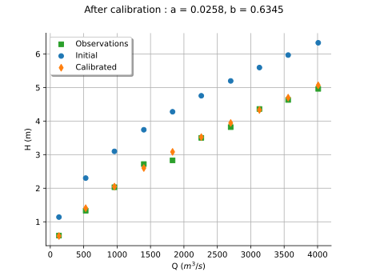
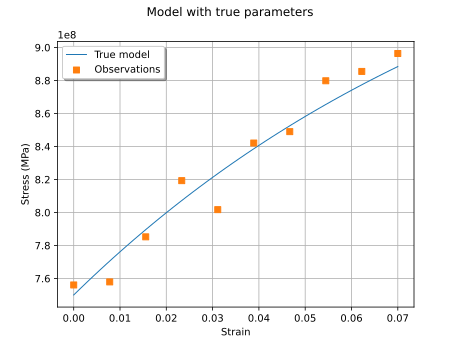
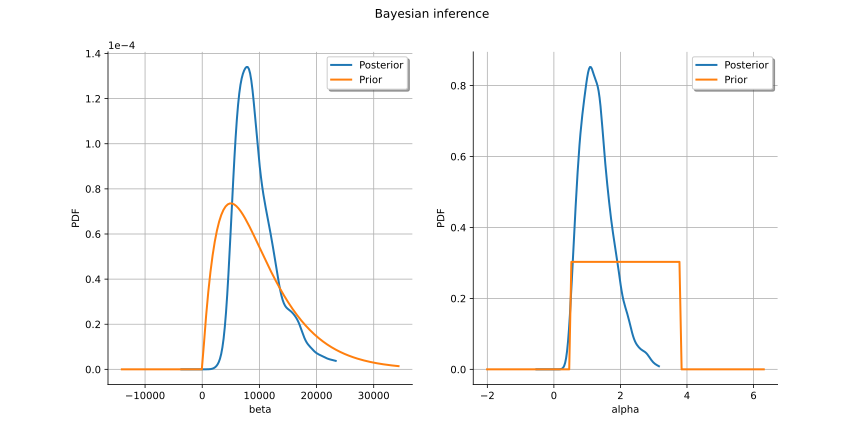
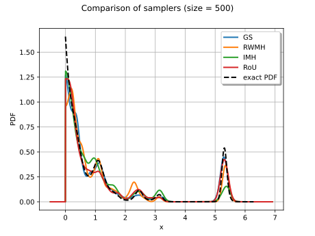

Calibration¶
Least squares and Gaussian calibration¶

Calibrate a parametric model: a quick-start guide to calibration
Calibrate a parametric model: a quick-start guide to calibration


Generate observations of the Chaboche mechanical model
Generate observations of the Chaboche mechanical model


MCMC-based calibration¶


Posterior sampling using a PythonDistribution
Posterior sampling using a PythonDistribution



Sampling from an unscaled probability density
Sampling from an unscaled probability density

Linear Regression with interval-censored observations
Linear Regression with interval-censored observations

Bayesian calibration of hierarchical fission gas release models
Bayesian calibration of hierarchical fission gas release models